Asher Ellis
See more at @asherellisphoto.

Coquihalla Summit
British Columbia, Canada
ALIA Test Flight
Burlington, Vermont

Metropolitan Building
Tokyo, Japan
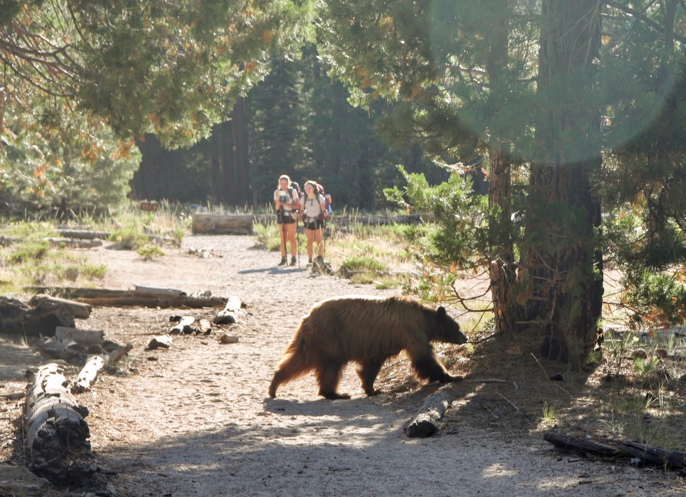
Black Bear
Yosemite, California
Schloss Belvedere
Vienna, Austria
Rainbow Trout
Colorado Springs, Colorado

Gooseberry Trail
Canyonlands, Utah
Fort Kochi Beach
Kochi, India
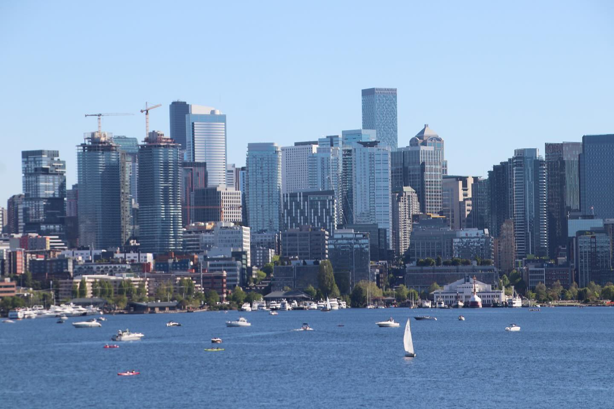
Gas Works Park
Seattle, Washington

Mount Bromo
East Java, Indonesia
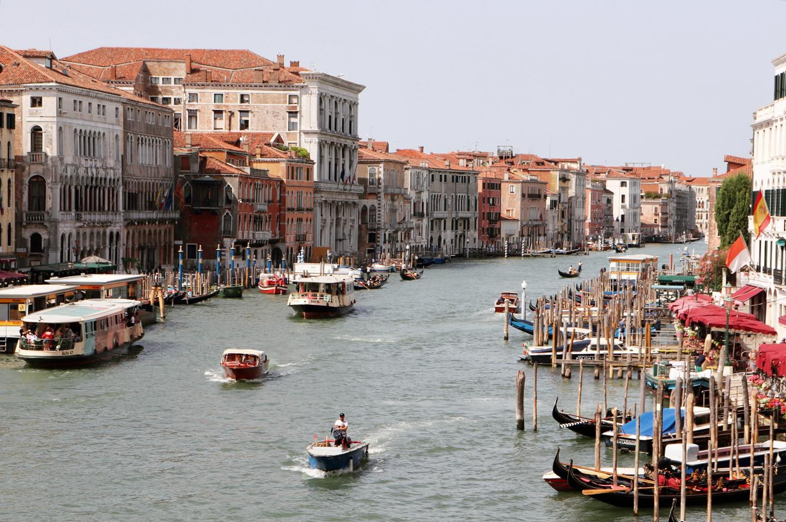
Grand Canal
Venice, Italy

Valle de Cocora
Quindío, Colombia
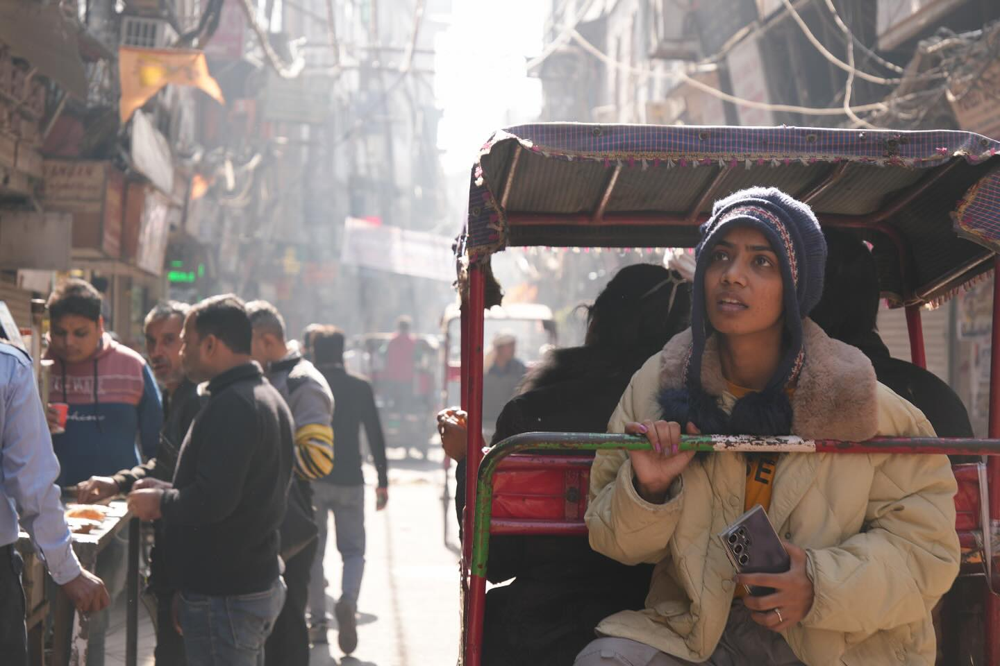
Paharganj
New Delhi, India
Jefferson Memorial
Washington, D.C.
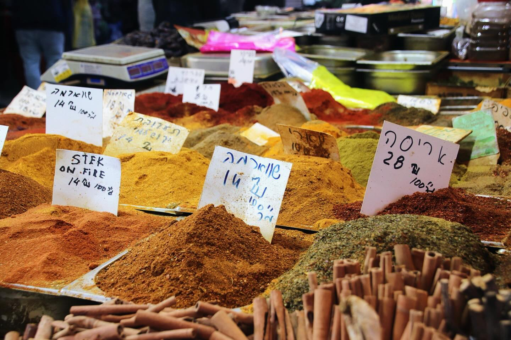
Mahane Yehuda
Jerusalem, Israel
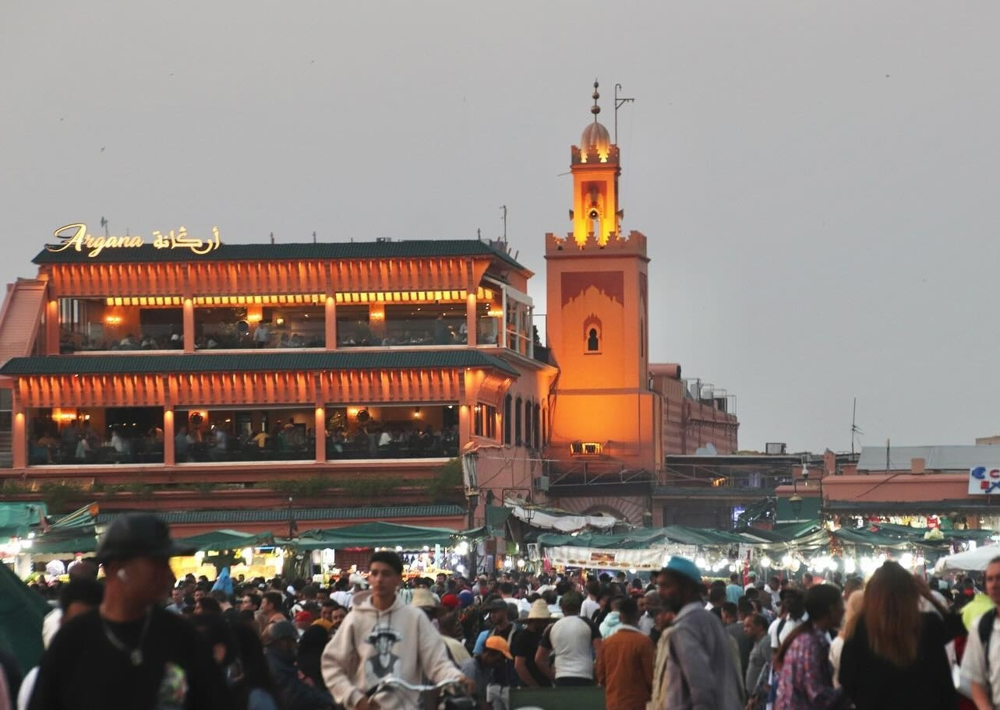
Jemaa el-Fnaa
Marrakech, Morocco

La Jolla Shores
San Diego, California

El Chaltén
Parque Nacional Los Glaciares, Argentina
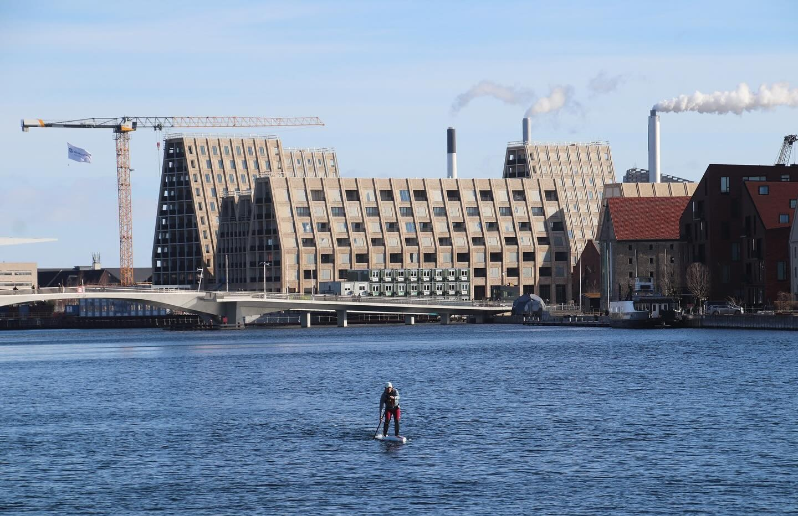
Copenhagen Harbor
Copenhagen, Denmark
White-Tailed Deer
Glacier, Montana
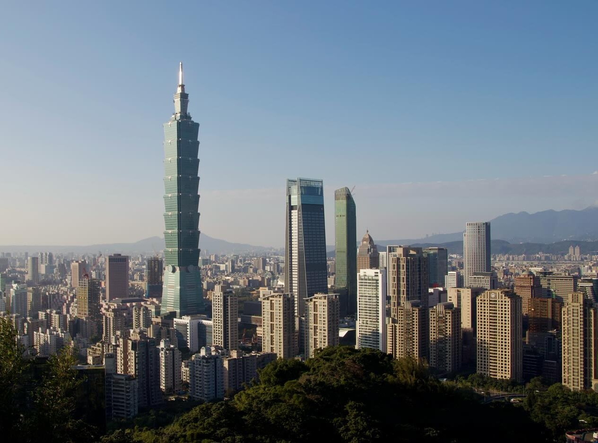
Xiangshan
Taipei, Taiwan
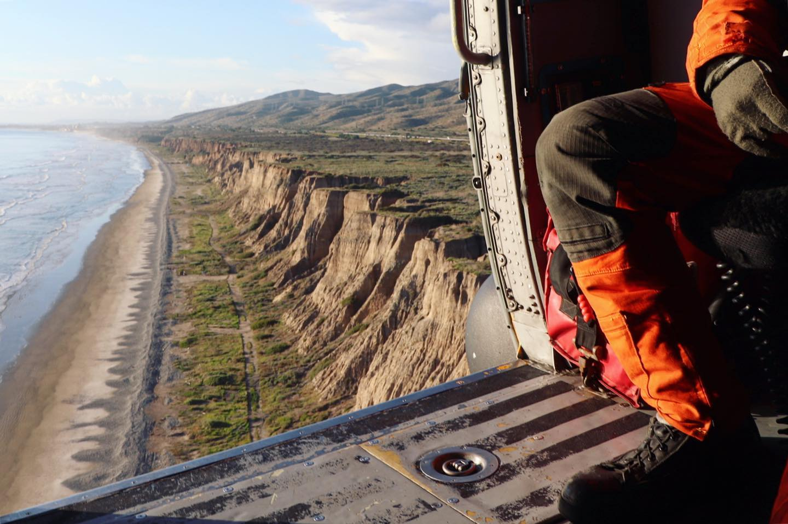
Marine Corps Base Camp Pendleton
San Diego County, California

Hmong Flower Girl
Ha Giang, Vietnam
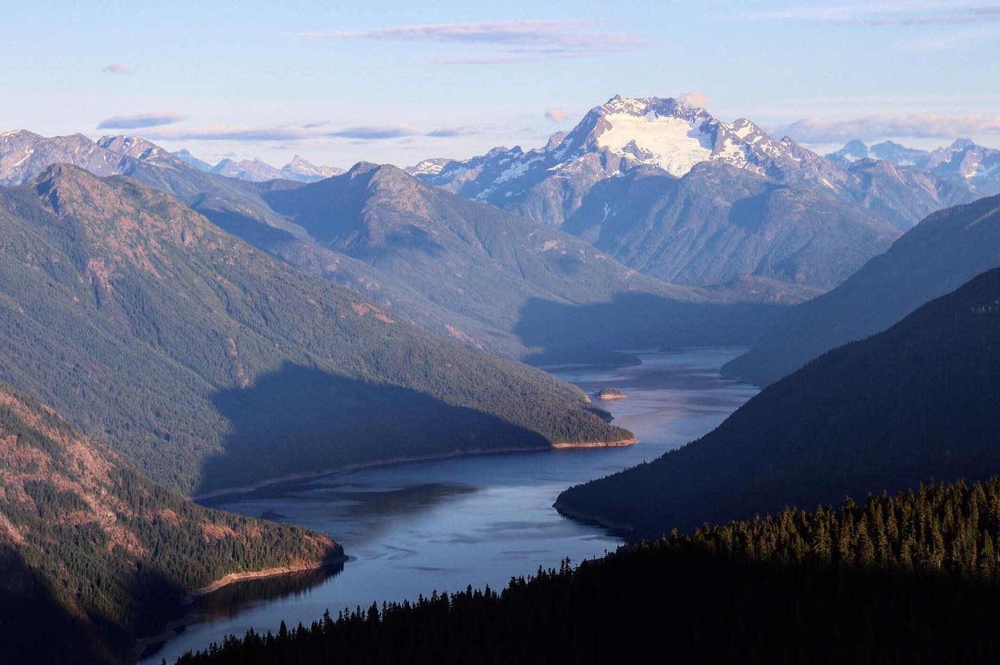
Jack Mountain
North Cascades, Washington
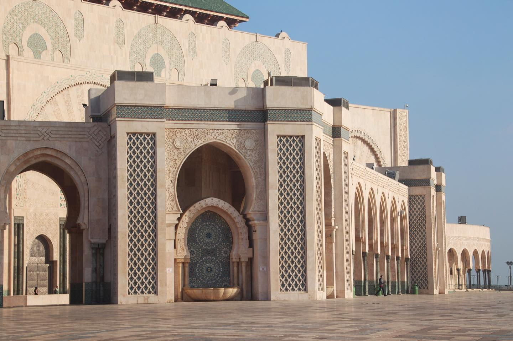
Hassan II Mosque
Casablanca, Morocco

Playa El Tunco
El Tunco, El Salvador
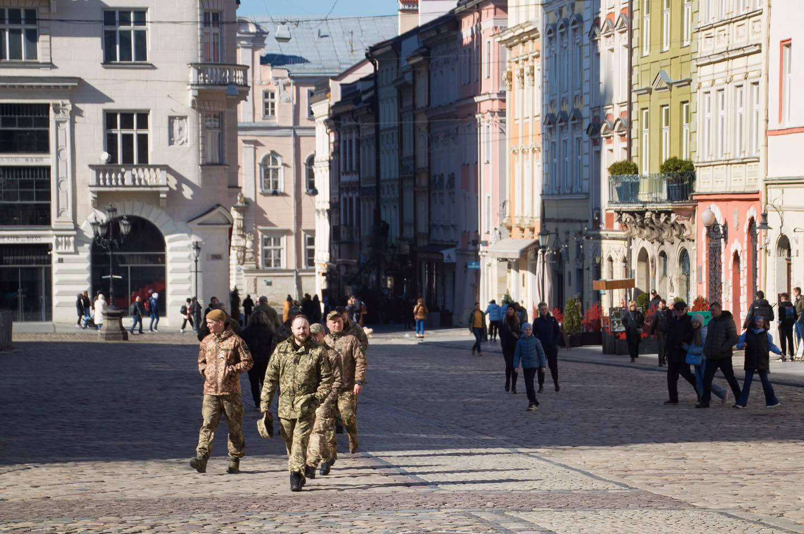
Rynok Square
Lviv, Ukraine
California Zephyr
Grand Junction, Colorado
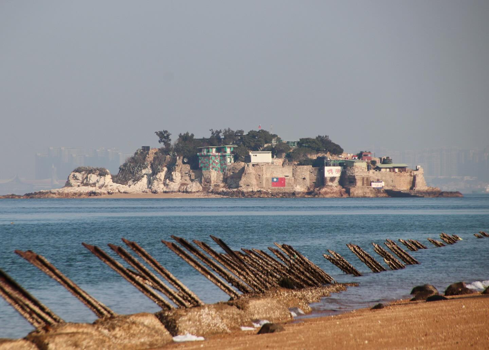
Dadan Island
Kinmen, Taiwan

Piedras Rojas
San Pedro de Atacama, Chile
Taj Mahal
Agra, India
Tunga
London, England